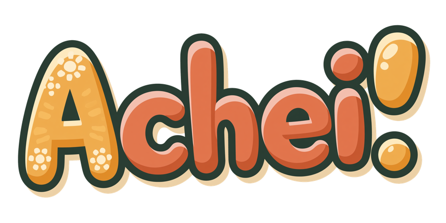
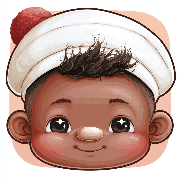
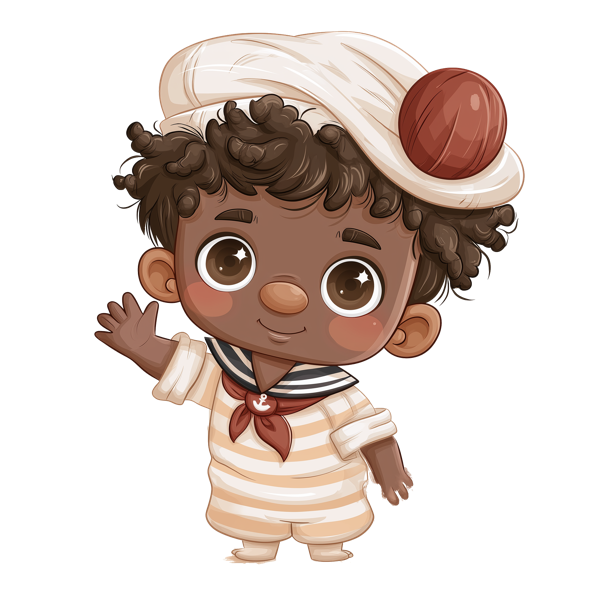
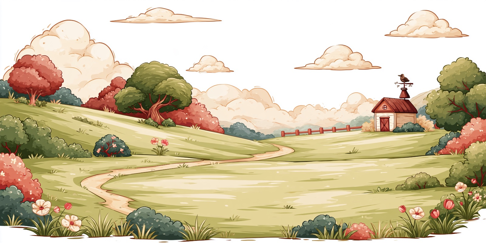
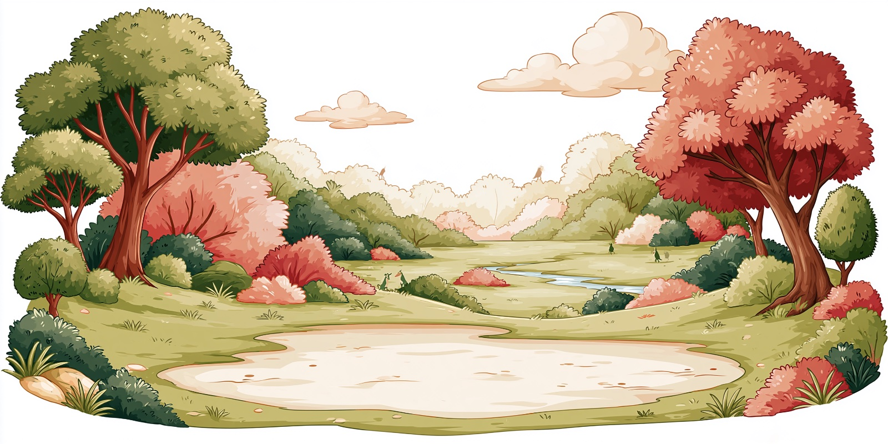
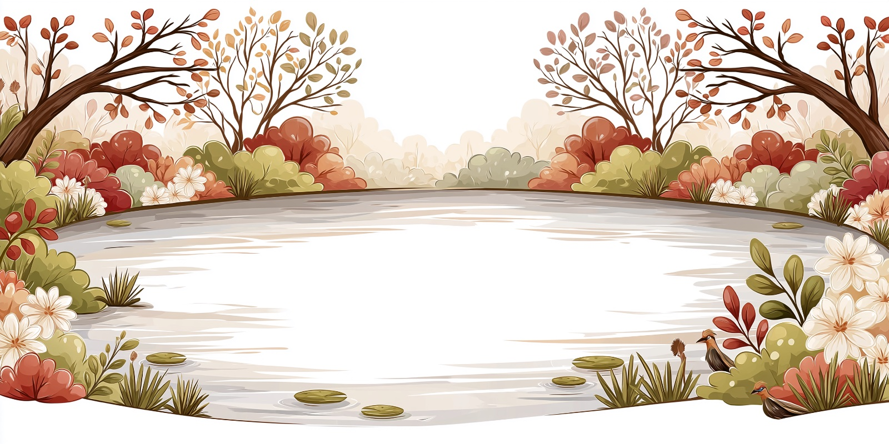
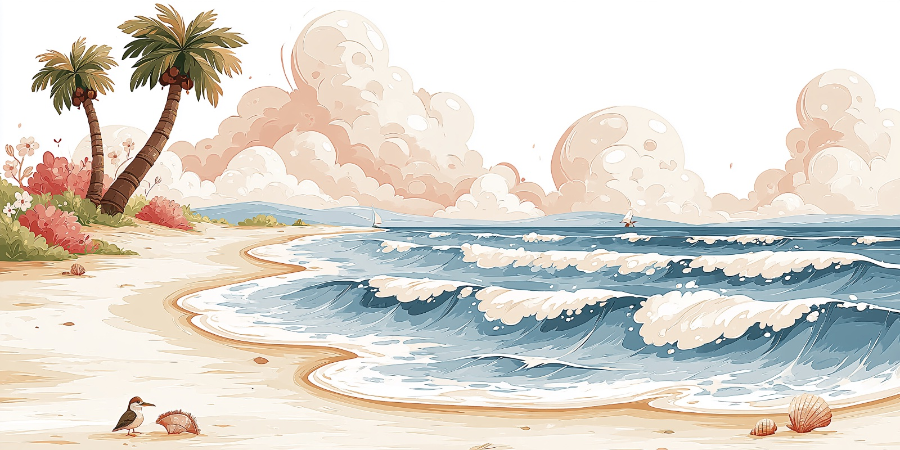
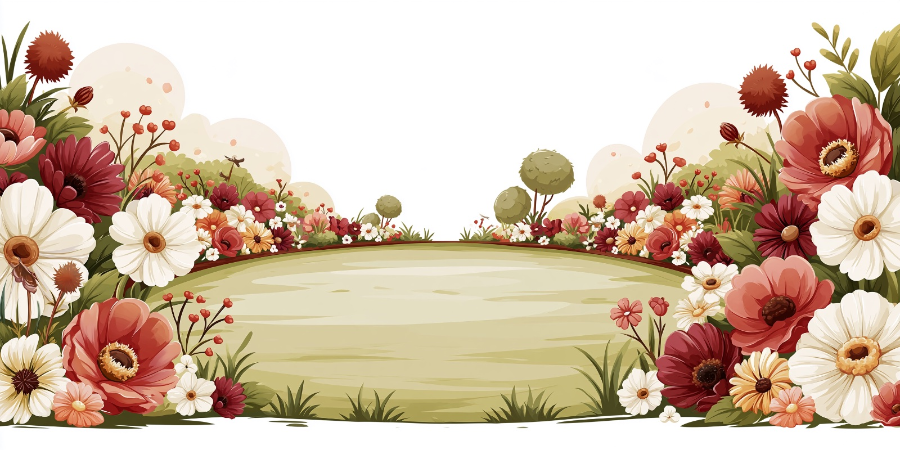
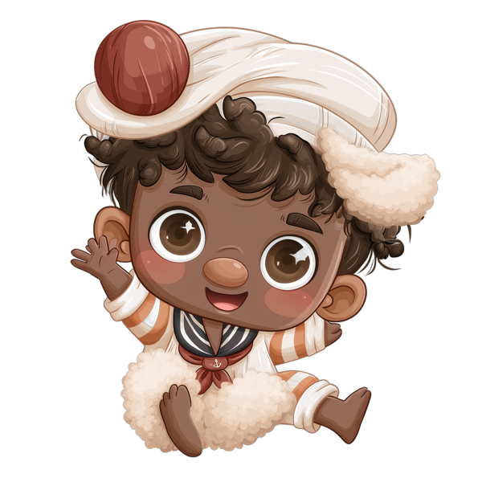

Théo pede
“Cadê a vaquinha?” O mascote convida, com voz e carinho.

Um joguinho para os pequenos aprenderem os animais brincando de achar.
Feito para crianças de 2 a 4 anos. Sem anúncios, sem internet, sem pressa — só o seu filho, os bichinhos e a alegria de descobrir.

Em breve na App Store SOON Grátis · iPhone e iPad
O marujo Théo pede um bichinho. A criança toca. E a mágica acontece.
“Cadê a vaquinha?” O mascote convida, com voz e carinho.
Um toque no animal certo na cena. Errou? Nada de susto: é só tentar de novo.
A cada acerto: “Vaquinha!… Cow!” — o nome em português e a primeira palavrinha em inglês.
Funciona sem internet, em qualquer lugar. Baixou, brincou.
Nada sai do aparelho. Nenhum dado da criança é registrado ou enviado.
Nenhuma propaganda, nenhum link para lugar nenhum. Só o jogo.
Sem sons agressivos, sem punição, sem tempo esgotando. Só acolhimento.
Ajustes e links ficam atrás de um portão parental. A criança não sai sozinha do jogo.
Cada cena traz seus bichinhos para achar — e novos nomes para aprender.

Fazendinha
Floresta
Lagoa
Praia
Jardim
Somos um estúdio pequeno que faz joguinhos para quem está começando a descobrir o mundo. Cada detalhe do Achei! foi pensado para ser gentil, seguro e divertido — do jeito que a gente gostaria para os nossos próprios filhos.
Um joguinho gentil para o seu filho descobrir os animais — no seu tempo, do seu jeito.
Em breve na App Store SOON